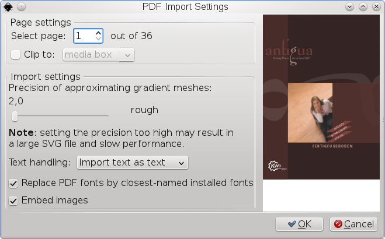

PDF/PostScript Tools
PDF and PostScript Viewers
While Adobe Reader is the most reliable PDF viewer, it is rightfully known as a resource hog, and it can’t display anything but PDF files. For a quick preview of PDF files some people may prefer a faster viewing program, and while there are many alternative PDF viewers, only two of them are recommended by the Scribus Team:
- Okular has become the default document viewer in KDE 4. In terms of PDF feature support, Okular is suprisingly close to Adobe Reader, although it cannot handle color-managed CMYK PDFs reliably yet. What makes Okular even more interesting than its PDF support is the long list of file formats that can be opened and converted: PDF, PostScript, EPS, DjVu, DVI, G3 Fax, as well as many image formats.
- Another reliable viewer and converter is GSview, whose features will be described in a separate chapter
PDF Viewers for Haiku
Adobe has never released a version of Acrobat/Adobe Reader for BeOS or Haiku. As an alternative you can use BePDF or DocumentViewer.
PDF Editors
PDF was and is designed as some kind of “electronic paper”, which means a PDF is not meant to be editable. But the more ubiquitous the PDF format became, the more use cases appeared, in which it made sense to edit “non-editable” files, e.g., last-minute corrections of spelling errors or the re-ordering of pages in a print workflow. The inventor of PDF, Adobe, took the lead and devoloped Acrobat, which is still the leading PDF editing program. However, since the PDF specification is open, others started to tinker as well, and today there are countless tools, closed source or open, that allow for editing PDF files. Below is a list of recommended FLOSS programs for PDF editing.
- Multivalent and the PDF Toolkit (pdftk) are both Java-based commandline utilities with countless options to manipulate PDFs.
- PDF Edit is a collection of Qt scipts to manipulate PDFs, but the scripts are hidden behind a graphical user interface, so editing PDFs works in a WYSIWIG (“What you see is what you get”) mode. PDF Edit allows for many direct changes to the content of a PDF file, including changes to text or colors, as well as removing content. The program is based on Qt3, but as of this writing, the developers are working on a port to Qt4.
- jPDF Tweak, a Java program, has rightfully been called a Swiss army knife for PDFs. It uses the highly reliable iText library for PDF editing.
- PDF Split and Merge (PDF SaM) is an even more powerful tool than jPDF Tweak and has a proven track record in pre-press environments. PDF SaM is rather a tool for professionals, whereas beginners will probably be overwhelmed by its many options. Like jPDF Tweak, PDF SaM is a Java program, but in contrast to all other Java programs in this list, the language of the graphical user interface can be changed. and there are many translations available.
- Bookbinder is a PDF editor for beginners and simple tasks. Its main purpose is to re-order (and re-scale, if necessary) pages in a PDF file for booklet printing and similar tasks. Bookbinder is also written in Java.
- If you want to edit a PDF that comprises artwork, you can use GIMP, Krita, Inkscape or Libre Office Draw, depending on the content, as all of them can import PDFs and will let you edit the files.
|  |
PDF import in Inkscape |